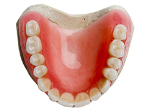
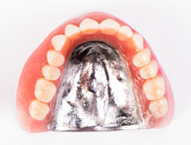
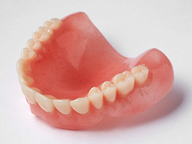
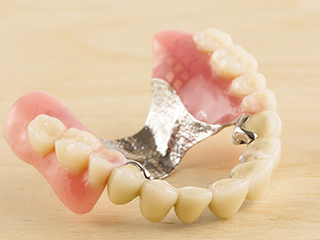
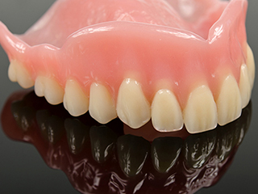
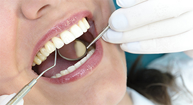

Denture義歯（入れ歯）
お口に合った入れ歯を～義歯（入れ歯）～
失った歯の機能を補う治療の中でも、歴史が古いのが入れ歯治療です。ところが、入れ歯には「うまく噛めない」「すぐに外れる」「噛むと痛みが出る」などのイメージをお持ちの方が多い様子。
しかし、入れ歯は残っている歯や顎の骨の状態を配慮し、顎の筋肉の動きを捉え噛み合わせを整えて製作すれば、不具合を感じることなくしっかり使用できます。併せて、定期的にメンテナンスを行い、お口の変化にも対応させることが大切です。
千葉県南柏の歯医者「さかいね歯科クリニック」では、確かな知識と技術を元に、よく噛める入れ歯をご提供しています。
自費診療と保険診療の入れ歯の違いをご存じですか？
保険診療の入れ歯は、患者さんが治療費を一部負担するだけで歯の機能を補えます。しかし、保険診療の入れ歯には使用素材や治療方法に制限があるため、「自然な見た目にしたい」「違和感を少なくしたい」「食べ物の温度をもっと感じたい」などのこだわりを実現するのは、難しいといえるでしょう。
それに対し、自費診療の入れ歯は素材や治療方法に選択肢があるのが特徴です。以下で、保険診療と自費診療の入れ歯を比較してみましょう。
※表は左右にスクロールして確認することができます。
| 保険診療の入れ歯 | 自費診療の入れ歯 | |
|---|---|---|
|  |  | |
| 特徴 | 床部分はレジン（歯科用プラスチック）でつくり、部分入れ歯には金属のバネ（クラスプ）がつきます。 | 特殊な樹脂や金属など、素材を選べるのが特徴です。入れ歯の固定装置にも、金属以外のさまざまな選択肢があります。 |
| 噛み心地 | 床部分に厚みがあるため、慣れるまでうまく噛めないことがあります。 | さまざまな工夫により、噛み心地をよくすることができます。 |
| 強度 | 高くありませんが、修理もしやすいのが特徴です。 | 強度が高い素材を選ぶことができます。 |
| 耐久性 | 低めです。 | 高い素材を選べます。 |
| 見た目 | 入れ歯と分かってしまうことがあります。 | より自然につくれます。 |
| 費用 | 比較的安価です。 | 比較的高額です。 |
取り扱い入れ歯
レジン床義歯

| 特徴 | 床部分をレジンでつくった保険診療の入れ歯です。 |
|---|---|
| メリット |
|
| デメリット |
|
金属床義歯

| 特徴 | 歯ぐきに当たる部分を金属でつくった自費診療の入れ歯です。 |
|---|---|
| メリット |
|
| デメリット |
|
シリコンデンチャー

| 特徴 | 歯ぐきに当たる部分をシリコンで覆っている入れ歯です |
|---|---|
| メリット |
|
| デメリット |
|
定期的に入れ歯状態の確認のため、歯科医院へご来院ください

入れ歯はつくったばかりのときには快適に使用できても、時間が経つにつれてだんだんお口に合わなくなるケースがあります。歯ぐきや顎の骨が痩せてしまったり、入れ歯がすり減ったりするのがその原因です。入れ歯を快適に使用するためには、定期的なメンテナンスが欠かせません。
合わない入れ歯をそのまま使い続けると、噛むときの力が一部分にかかってしまい、歯ぐきを傷めてしまいます。また、噛み合わせが悪くなるため、よく噛めなくなったり、外れやすくなったりするケースも増えていくでしょう。
さらに、顎の関節に負担をかけてしまう点も心配です。入れ歯を長持ちさせるためにも、お口まわりの健康を保つためにも、定期的に歯科医院でメンテナンスを受けるようにしてください。